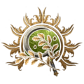
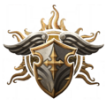
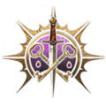

Baldur's Gate é um RPG da Bioware que tem como cenário a cidade de mesmo nome do reino de Forgotten Realms. Esse reino consiste em um pacote de expansão para o RPG de mesa Dungeons and Dragons (D&D) que fez muito sucesso ao apresentar muitas cidades com histórias próprias e vários NPCs de altíssimo nível de poder.
Baseado também no sistema de regras do D&D, o processo de criação de personagens é bastante similar ao que é visto nesse RPG. Escolhe-se uma classe — donde as principais são os guerreiros, magos e ladinos, uma raça — humano, elfo ou anão, e distribui-se pontos entre os atributos como força e inteligência mediante a sorte obtida no rolar de 3 dados virtuais.
A classe de um personagem em Baldur's Gate 3 é uma das características mais distintivas.
Cada classe representa uma vocação diferente e oferece habilidades, poderes e capacidades únicas que influenciam a interação do personagem com o mundo. Elas determinam a maioria das habilidades, tanto dentro quanto fora do combate. À medida que um personagem avança nos níveis de sua classe, adquire novos poderes e habilidades incríveis.
O nível máximo que um personagem pode atingir em Baldur's Gate 3 é o nível 12.
Cada classe proporciona opções de diálogo exclusivas, disponíveis somente para aquele tipo específico de personagem. Além disso, cada classe possui animações exclusivas para lançamento de feitiços (enquanto as animações de ataque são baseadas na raça).
Bárbaro é uma classe em Baldur's Gate 3. Os bárbaros utilizam sua destreza marcial e fúria primal para se fortalecerem e dominarem os inimigos em combate.
Bardo é uma classe de personagem em Baldur's Gate 3. Os bardos são contadores de histórias, artistas e intérpretes experientes. Eles canalizam seu poder através de canções, discursos ou performances para lançar magias. Os bardos utilizam Carisma como sua habilidade principal.
Clérigo é uma classe de personagem em Baldur's Gate 3. Os clérigos adoram e realizam a vontade de suas divindades para o mundo, para melhor ou para pior. Eles canalizam o poder de sua fé para lançar feitiços. Clérigos usam Sabedoria como seu valor de habilidade principal. As

Druida é uma classe de personagem em Baldur's Gate 3. Os druidas estão intimamente ligados à natureza e aos animais que nela habitam. Eles utilizam o poder da natureza para lançar magias e têm a habilidade de se transformar em diversas criaturas. Os druidas usam Sabedoria como sua principal habilidade.
Lutador é uma classe de personagem em Baldur's Gate 3. Os lutadores usam sua perícia marcial para enfrentar inimigos e apoiar aliados durante o combate. Eles utilizam Força ou Destreza como seu valor de habilidade principal.
Monge é uma classe de personagem em Baldur's Gate 3. Monges são combatentes desarmados capazes de gastar Pontos de Ki para executar habilidades especiais. Os principais atributos chave do monge são Sabedoria, Destreza e Constituição.

Paladino é uma classe de personagem em Baldur's Gate 3. Os paladinos são mestres em uma variedade de armas e armaduras. Eles canalizam o poder de seu juramento sagrado para curar os enfermos e feridos, e para aniquilar seus inimigos. Pontos importantes de habilidade para paladinos incluem Força (ou Destreza), Carisma.
Ranger é uma classe de personagem em Baldur's Gate 3. Sintonizados com a natureza e seu entorno, os rangers utilizam tanto seu conhecimento das terras selvagens quanto magias para perseguir suas presas. Pontos importantes de habilidade para rangers incluem Destreza (ou Força), Constituição e Sabedoria.

Ladino é uma classe de personagem em Baldur's Gate 3. Os ladrões são especialistas na arte do sigilo e confiam em sua astúcia para dominar qualquer situação desafiadora. Ladrões usam Destreza como sua habilidade principal.
Feiticeiro é uma classe de personagem em Baldur's Gate 3. Os feiticeiros usam seus poderes mágicos inatos para enfrentar inimigos e ajudar aliados durante o combate. Feiticeiros utilizam Carisma como sua habilidade principal.
Bruxo é uma classe de personagem em Baldur's Gate 3. Os bruxos canalizam a magia do pacto de seus patronos para enfrentar inimigos e ajudar aliados durante o combate. Bruxos utilizam Carisma como sua habilidade principal.
Mago é uma classe de personagem em Baldur's Gate 3. Os magos canalizam a magia por meio de seu amplo conhecimento do arcano para enfrentar inimigos e ajudar aliados durante o combate. Magos utilizam Inteligência como sua habilidade principal.